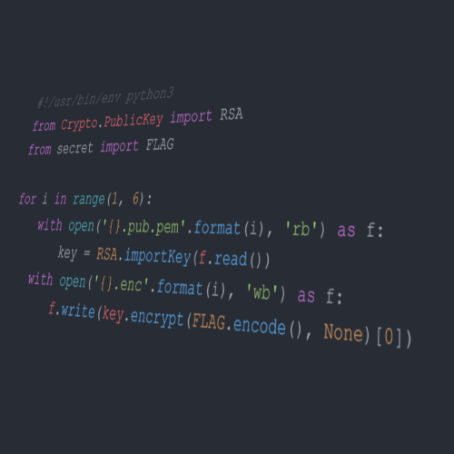
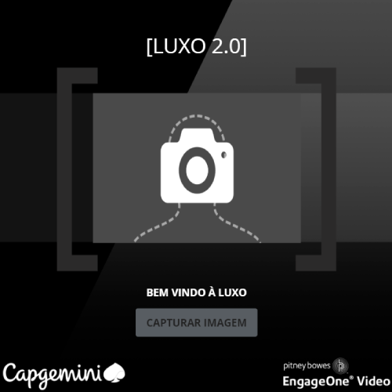
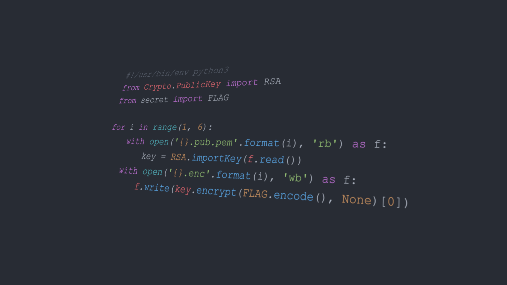
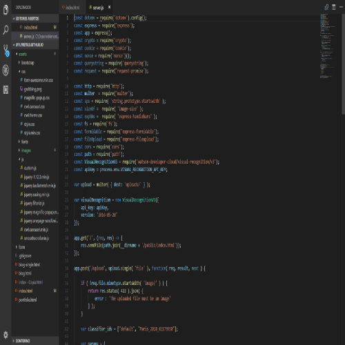
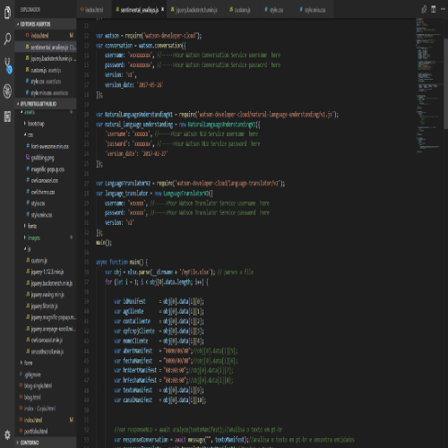
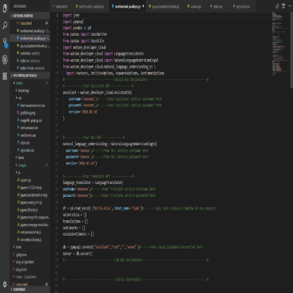
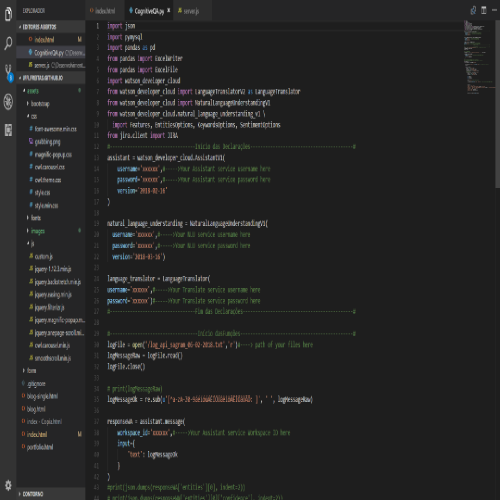
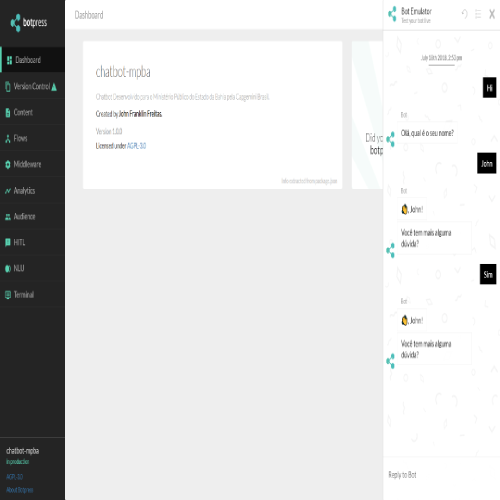

Hi, I'm
John Franklin Freitas
Technical Lead Data & Analytics @ EDP Renewables by Decskill. Bridging the gap between business needs and complex technical execution with scalable Big Data architectures.
About John
A narrative overview of my academic foundation and decade-long tech journey.
Technical Lead Data & Analytics
As a professional in the Data and Analytics field, I combine technical expertise, leadership, and a focus on delivering high-value solutions that drive digital transformation. Currently working as a Tech Lead at EDP, I lead complex projects that transform raw data into business insights, enhancing decision-making.
With over 15 years of experience, I have built my career on continuous learning and adaptability. I have led teams of up to 12 members, managing multiple projects simultaneously, and have taken on hybrid roles such as Product Owner and Scrum Master. This versatility enables me to bridge the gap between business needs and technical execution, ensuring effective communication and successful project outcomes.
I specialize in designing and implementing scalable data architectures for large volumes of data in cloud environments. With expertise in cloud platforms like Azure, I work with tools and languages such as Apache Spark, Hive, Impala, SQL, Python, and PySpark. I integrate data from various sources, including energy systems, data hubs, and SAP, ensuring good integration between critical systems.
In addition to technical delivery, I am passionate about fostering team growth and promoting a culture of knowledge sharing. I believe that a collaborative and well-informed team is essential for long-term success. I actively promote best practices in data engineering, monitoring, and orchestration, optimizing data pipelines to meet the ever-evolving business demands. Staying at the forefront of technological trends is key to my role. I continuously seek innovations that improve how organizations utilize data.
I value the synergy between people, technology, and data as the driving force behind digital transformation. My purpose is to help organizations make data-driven decisions that create positive business impacts while promoting a culture of continuous improvement and innovation.
Strengths include:
- Leadership and team management: Guiding teams on complex data projects, focusing on collaboration, accountability, and results.
- Cloud and big data expertise: Delivering scalable cloud-based solutions using platforms like Azure and tools like Apache Spark, SQL, and PySpark.
- Alignment between business and technology: Ensuring that technological solutions meet business objectives and maximize value.
- Continuous improvement: Promoting a culture of learning, innovation, and best practices in data engineering and analytics.
My Skills
Highly specialized technologies and platforms driving my architecture daily.
Technical Leadership & Business
Data Engineering & Analytics
Professional Journey
Over a decade of industry expertise steering telemetry, big data architectures, and tech leadership.
Technical Lead Data & Analytics @ EDP Renewables (by Decskill)
September 2025 - PresentWith solid experience in Data & Analytics projects, I work as a Tech Lead at EDP, leading initiatives that transform data into strategic insights, focusing on technological innovation and operational efficiency.
My mission is to lead projects from start to finish, ensuring alignment with the company's strategic objectives. In my daily work, I strive to develop and implement modern, scalable architectures for large data volumes, with special attention to the energy sector's demands. I promote the use of cloud platforms (Azure) for data storage, processing, and analysis, ensuring best practices in developing solutions with technologies such as Apache Spark, Hive, Impala, SQL, Scala, Python, and Pyspark.
I have experience leading teams of up to 30 people and managing multiple projects simultaneously. On several occasions, I have taken on hybrid roles, covering the needs of both Product Owner and Scrum Master, ensuring the continuity and success of ongoing projects. This flexibility allows me to navigate between business and technology areas, ensuring efficient communication and high-value deliveries.
I also lead the integration of data from different sources, including energy systems, data hubs, SAP, and other critical systems for the company's operation. My focus is to encourage the adoption of modern monitoring and orchestration tools, optimizing data pipelines in cloud environments. As a Tech Lead, I promote team growth by sharing knowledge and developing skills. Additionally, I stay constantly updated on technological trends, seeking innovations that add value to the business.
Tech Lead Data & Analytics @ Decskill
April 2023 - PresentWith solid experience in Data & Analytics projects, I work as a Tech Lead at EDP, leading initiatives that transform data into strategic insights, focusing on technological innovation and operational efficiency.
My mission is to lead projects from start to finish, ensuring alignment with the company's strategic objectives. In my daily work, I strive to develop and implement modern, scalable architectures for large data volumes, with special attention to the energy sector's demands. I promote the use of cloud platforms (Azure) for data storage, processing, and analysis, ensuring best practices in developing solutions with technologies such as Apache Spark, Hive, Impala, SQL, Scala, Python, and Pyspark.
I have experience leading teams of up to 12 people and managing up to 10 active projects simultaneously. On several occasions, I have taken on hybrid roles, covering the needs of both Product Owner and Scrum Master, ensuring the continuity and success of ongoing projects. This flexibility allows me to navigate between business and technology areas, ensuring efficient communication and high-value deliveries.
I also lead the integration of data from different sources, including energy systems, data hubs, SAP, and other critical systems for the company's operation. My focus is to encourage the adoption of modern monitoring and orchestration tools, optimizing data pipelines in cloud environments. As a Tech Lead, I promote team growth by sharing knowledge and developing skills. Additionally, I stay constantly updated on technological trends, seeking innovations that add value to the business.
Tech Lead Data & Analytics @ EDP
April 2023 - October 2025With solid experience in Data & Analytics projects, I work as a Tech Lead at EDP, leading initiatives that transform data into strategic insights, focusing on technological innovation and operational efficiency.
My mission is to lead projects from start to finish, ensuring alignment with the company's strategic objectives. In my daily work, I strive to develop and implement modern, scalable architectures for large data volumes, with special attention to the energy sector's demands. I promote the use of cloud platforms (Azure) for data storage, processing, and analysis, ensuring best practices in developing solutions with technologies such as Apache Spark, Hive, Impala, SQL, Scala, Python, and Pyspark.
I have experience leading teams of up to 12 people and managing up to 10 active projects simultaneously. On several occasions, I have taken on hybrid roles, covering the needs of both Product Owner and Scrum Master, ensuring the continuity and success of ongoing projects. This flexibility allows me to navigate between business and technology areas, ensuring efficient communication and high-value deliveries.
I also lead the integration of data from different sources, including energy systems, data hubs, SAP, and other critical systems for the company's operation. My focus is to encourage the adoption of modern monitoring and orchestration tools, optimizing data pipelines in cloud environments. As a Tech Lead, I promote team growth by sharing knowledge and developing skills. Additionally, I stay constantly updated on technological trends, seeking innovations that add value to the business.
Lead Data Scientist @ HumanIT Digital Consulting
November 2022 - April 2023Besides the Lead Data Scientist activities, I am also participating in an internal project that aims to develop a platform that manages and facilitates the control of time sheets of the company's employees. This platform is being developed with Java Springboot and PostgresSQL and AngularJS on the front end, where the necessary services for the platform's operation are developed. My activities in this project consist of creating new services and functionalities in the platform as well as creating tables and optimizing code.
Lead Engineer @ NTT DATA Europe & LATAM
April 2021 - November 2022Working on a project in the financial sector, working daily with tools from the Cloudera stack, such as Apache Spark, Hive, Impala, Spark SQL and also working daily with languages such as SQL and Scala, also helping in the process of monitoring jobs on the Clusters and helping both in the project and in the company to take care of the development of teammates, creating strategies for team growth as well as sharing knowledge and professional growth.
Data Scientist @ NTT DATA Europe & LATAM
November 2019 - April 2021Specialist in cognitive systems, with the objective of developing intelligent solutions for facial recognition, image recognition and machine learning using libraries and public and private platforms such as IBM Watson, OpenCV, Keras, Tensorflow, Scikit Learn and others.
Development of NLU and NLP models for enhancement of banking services using IBM Watson, libraries in python, keras and others.
Data Scientist @ NTT DATA Europe & LATAM
September 2018 - August 2019Specialist in cognitive systems, with the objective of developing intelligent solutions for facial recognition, image recognition and machine learning using libraries and public and private platforms such as IBM Watson, OpenCV, Keras, Tensorflow, Scikit Learn and others.
Development of NLU and NLP models for enhancement of banking services using IBM Watson, libraries in python, keras and others.
Research And Development Specialist @ Capgemini
July 2018 - August 2018Responsible for the creation and management of technical laboratories involving machine learning, artificial intelligence, cognitive computing using IBM Watson (NLU), data science, big data, devops and some of the best technologies on the market. Performance in the creation of technical presentations showing the capabilities of the tools and technologies offered as well as technologies of partners.
Responsible for designing and deploying DevOps mats using the best practices of Continuous Integration, Continuous Deployment and Continuous monitoring, using tools such as Puppet, Chef, Ansible, Docker, Jenkins, Nexus, CA API Management, CA Agile Requirements Designer, CA Continuous Delivery Director, and other of the best tools in the market.
Acting in the research, development and architecture of complete solutions for clients offering the best in the current technology practices in the market. Also acting in the implementation of DevOps for large financial institutions of the country.
Junior Research And Development Specialist @ Capgemini
September 2017 - July 2018Responsible for the creation and management of technical laboratories involving machine learning, artificial intelligence, cognitive computing using IBM Watson (NLU), data science, devops and some of the best technologies on the market. Performance in the creation of technical presentations showing the capabilities of the tools and technologies offered as well as technologies of partners.
Responsible for designing and deploying DevOps mats using the best practices of Continuous Integration, Continuous Deployment and Continuous monitoring, using tools such as Puppet, Chef, Ansible, Docker, Jenkins, Nexus CA API Management, CA Agile Requirements Designer, CA Continuous Delivery Director, and other of the best tools in the market.
Acting in the research, development and architecture of complete solutions for clients offering the best in the current technology practices in the market. Also acting in the implementation of DevOps for large financial institutions of the country.
Education
Featured Works
A selection of custom AI models, data engines, and cognitive systems developed throughout my career.








Endorsements
Recommendations from corporate partners and senior engineering colleagues on my technical squads.
Get In Touch
Have an interesting project, architecture opportunity, or AI initiative? Drop a message!
Feel free to contact me directly using any of my social channels or by sending an email. I am always open to discussing advanced data architectures, cloud setups, big data processing, or coordinating developer teams in high-value business pipelines.